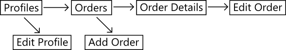

Design
- Some icons for the application bar are built into Blend, but there are also a great set of Creative Commons icons at Modern UI Icons
- Design should focus on typography rather than chrome. Guideline minimum size for text is 13pt
- Absolute minimum border around touch activated UI elements should be 7px to avoid tapping the wrong element
- Data is sacred, if any action will cause data to be deleted/lost then prompt the user
- Ultimately it is best to use a Windows Phone to get a feel for the design
Layout
Hub and Spoke model
-
Below is the page layout for an example app. Arrows show where navigation buttons in the pages point

- Hub and Spoke is a design principle that limits where the navigation buttons in your UI should point to ensure a good user experience
- Navigation occurs via a series of 'hubs', (e.g. Profiles, Orders) the primary hub being the home screen (e.g. Profiles)
- The user drills down along a 'spoke' using buttons in the UI and returning back to the hub using the physical back button on the phone
- Only allow navigation buttons in the UI to go deeper into the content, not back or across to another spoke (e.g. from Order Details to Add Order)
- To get to another spoke, user should back out to the common hub and then drill down the other path
-
If you need to return as the result of a button press (e.g. saved a new profile), then activate the back button behaviour using,
if (NavigationService.CanGoBack) NavigationService.GoBack();
Navigating between pages
- To navigate to another page, put the following in e.g. a button click event handler
NavigationService.Navigate( new Uri("/View/ProfilePage.xaml", UriKind.Relative)); - To pass data between pages use HTML style queries in the URI e.g.
NavigationService.Navigate( new Uri(String.Format( "/View/ProfilePage.xaml?Action={0}&Id={0}", action, id))); -
To retrieve these queries, use,;
string action NavigationContext.QueryString .TryGetValue("Action", out action); - To pass an object from one page to another either,
- Save to a ViewModel property
- If it is a database object with a unique id, send the id in the URI as above then retrieve the object via a Linq query on the new page